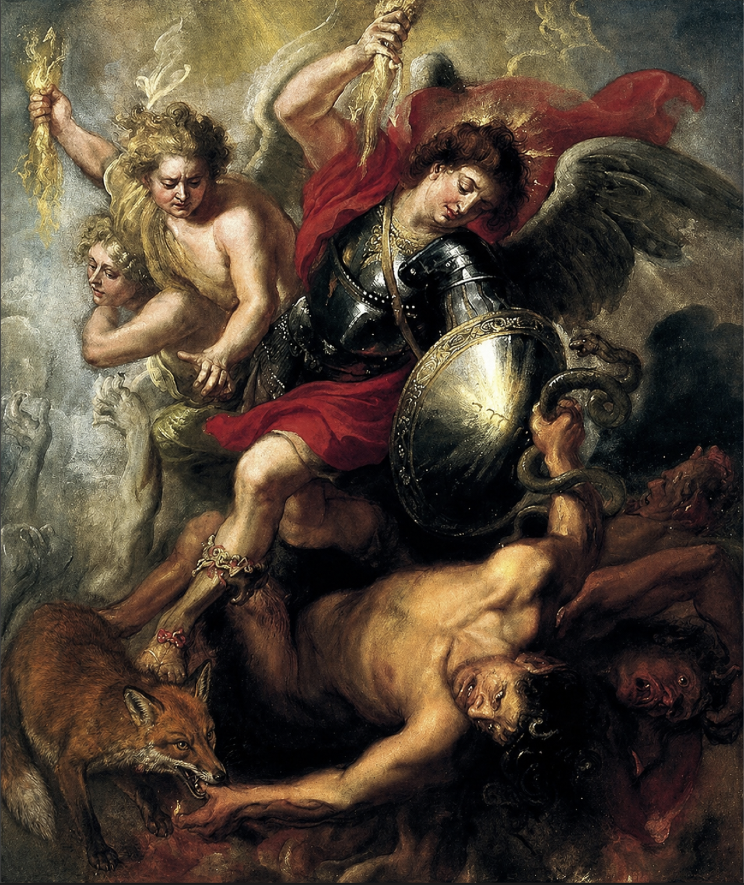

M

"Saint Michel expulsant Lucifer et les anges rebelles", 1622, Peter Paul Rubens
Saint Michel renvoie Lucifer ainsi que des anges rebelles. On y retrouve Saint Michel, un ange guerrier, combattant Lucifer et les anges qui se sont rebellés contre Dieu. Saint Michel est représenté en armure et repousse les rebelles vers le bas montrant la victoire du bien sur le mal dans la religion chrétienne

"Le renard et les anges rebelles expulsés par St Michel"
Saint Michel descendit du ciel pour rétablir l'ordre, ce qui déclancha une grande bataille. Pris au milieu de celle-ci, un renard, tentant de se faufiler à travers les combattants. Cependant, il fut entraîné dans la chute des anges rebelles et devint ainsi témoin de leur défaite. Le renard apparaît alors comme un symbole de ruse face à Saint Michel et le triomphe du bien sur le mal.
- peinture à l'huile sur toile
- 1622
- Peter Paul Rubens
- Musée national Thyssen-Bornemisza, Madrid
- 149 x 126 cm